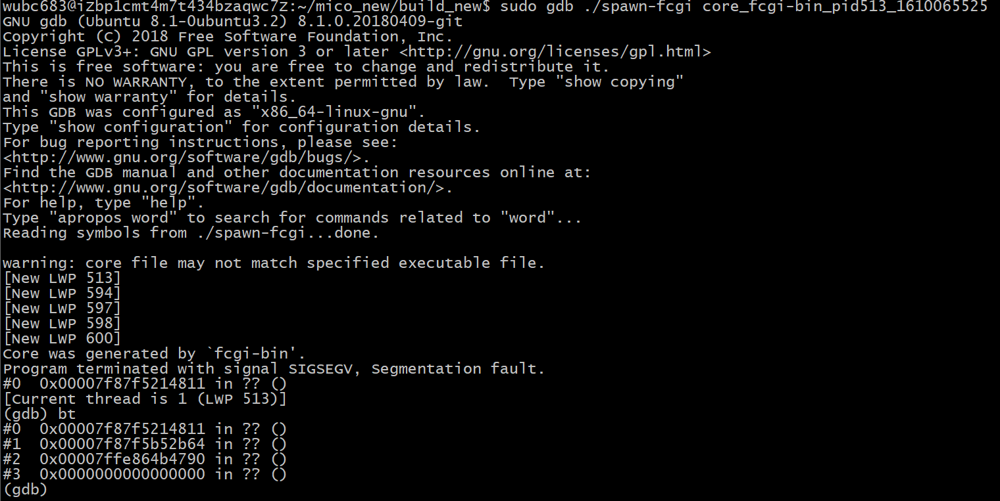

C++. One of the programming languages of all time.
When I first learned Python, I thought, "Wow this is pretty easy! I kinda want a challenge now..." Oh boy, did C++ give me that challenge. Taking my C++ course for my program, I first went from, "This makes sense and is even better than Python!" to "WHY WOULD I EVER USE INHERITANCE????? DO I WANT TO HAVE PROBLEMS READING MY CODE???"
Of course, that's not exactly how it went but the dramatics are fun. From dynamically allocating memory for programs that really didn't even need that, to seeing that oh so sweet Segmentation Fault (core dumped) message way more times than I'd like to admit. C++ did teach me the basic fundamentals to how software is written at a lower level with stronger control and access to the hardware and more abilities to crash your program.
As a bit of a love (hate) letter to C++, here are a few things that I just don't like about C++ in no order.
Why must you do this, C++?
- Classes
- Cout and Cin
- New and Delete
- Namespaces
I get the appeal of classes, it's a blueprint for objects in OOP, but even if I understood it pretty well, the whole idea still makes me really confused and irrationally upset, and I did well enough on classes to create programs with and get good scores on my exams, but I can't ever forgive classes for making me think creating objects are hard.
I only recently found out that the newer standards of C++ actually use println! Which would be way better because the way cout and cin work always bothered me, because so many other languages have an easier way of printing to STDOUT, and now that I know that cout and cin technically override the bitwise operations to achieve their functionality, I get why. Especially now that I know what those bitwise operations mean, it's more annoying and I just resort to using printf at times, even in a C++ program.
C++ provides a better way of doing dynamic memory management than C, in my opinion. But I still can never wrap my head around trying to do all of this when a lot of the time I don't really need to. I always feel like using these keywords and dynamic memory as a whole, questions my skill, which is good but also really frustrating at times, especially when I just need something basic to work.
I only recently found out that using namespace std; is generally a bad idea. So on a previous project I tried using std:: for all of my standard library functions, and I was just kinda mildly disgusted by how it looked. Like, calling std::cout, std::vector, and std::ofstream just looks so wrong. No other language that I've used, does that. I know C++ has reasons for it but....ugh.
Conclusion

I just hope whoever this was on StackOverflow managed to figure out... whatever this is.C++ is a language I'm glad to still be learning, even if it feels like there are millions of way to do one thing, and it turns out the way you did something is not only not efficient but will get you put on trial in front of the C++ tribunal. I still would prefer to program in C++ despite all of its flaws and strange design choices. Maybe I have a slight soft spot for it.
...as if. Ha.